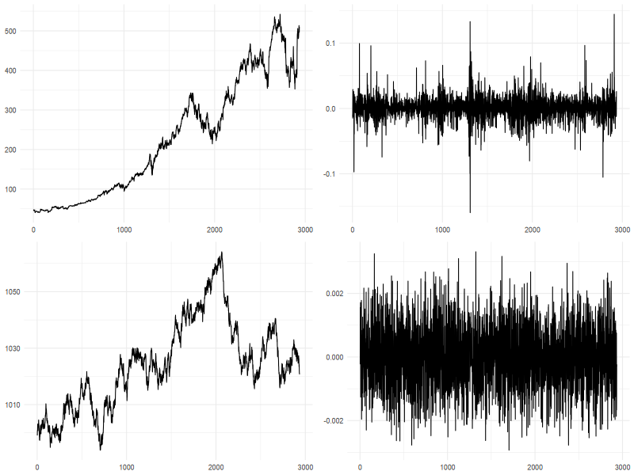

1. Introducción
En las sesiones anteriores estudiamos la dependencia lineal en el nivel de una serie de tiempo: modelos AR, MA y ARMA describen cómo el valor esperado de \(r_t\), condicional en el pasado, puede depender de sus propios rezagos y de choques anteriores. En la mayoría de las series de retornos financieros, sin embargo, esa dependencia en la media es débil o inexistente —los mercados son, en buena medida, eficientes en el sentido de que resulta difícil predecir el signo o la magnitud del retorno del día siguiente a partir de la información pasada—. Esto no quiere decir que los retornos sean independientes en el tiempo: lo que sí es altamente predecible es su volatilidad.
Mandelbrot (1963) fue el primero en documentar formalmente lo que hoy llamamos agrupamiento de volatilidad (volatility clustering): "grandes cambios tienden a ser seguidos de grandes cambios, de cualquier signo, y pequeños cambios tienden a ser seguidos de pequeños cambios". En otras palabras, los periodos de alta volatilidad y los periodos de calma tienden a agruparse en el tiempo, en lugar de distribuirse de manera uniforme. Esta es una forma de dependencia temporal que pasa completamente desapercibida si solo miramos la media condicional de la serie: los retornos, en efecto, se pueden ver insesgados uno tras otro, incluso cuando su varianza condicional cambia de manera sistemática.
Engle (1982) formalizó esta idea con el modelo ARCH (Autoregressive Conditional Heteroskedasticity), en el que la varianza condicional de hoy depende de los choques cuadráticos pasados. Bollerslev (1986) generalizó el modelo ARCH al modelo GARCH (Generalized ARCH), permitiendo además que la varianza condicional dependa de sus propios valores rezagados. Un modelo GARCH describe entonces, de manera parsimoniosa, la dinámica completa de la varianza condicional de una serie: cómo reacciona ante choques recientes y cuánta memoria conserva de su propio pasado.
Los modelos GARCH tienen un lugar central en las finanzas empíricas porque la volatilidad, a diferencia del retorno esperado, es un objeto que sí podemos pronosticar con algún grado de éxito, y de ese pronóstico dependen decisiones muy concretas: el cálculo de medidas de riesgo como el Value at Risk (VaR) y los requerimientos de capital o margen; la valoración de instrumentos derivados, cuyo precio depende directamente de la volatilidad esperada del subyacente; la construcción de portafolios eficientes en varianza; y, como veremos en el ejemplo de aplicación de la última sección, el dimensionamiento del riesgo de posiciones de cobertura (hedging) con contratos de futuros.
Para apreciar esta distinción entre imprevisibilidad en el nivel e imprevisibilidad en la varianza, comparemos dos series.

¿Cuál de las series corresponde a un activo financiero y cuál a un proceso simulado?
2. El modelo GARCH
Un modelo GARCH se especifica mediante dos ecuaciones: la ecuación de la media, que describe el comportamiento del retorno condicional en la información pasada, y la ecuación de la varianza, que describe el comportamiento de la varianza condicional. Presentamos ambas para el caso GARCH(1,1), el más utilizado en la práctica y el que estimaremos en la sección de aplicación.
Ecuación de la media
La ecuación de la media de un modelo GARCH(1,1) simple es
\[r_t=\mu+e_t \qquad\qquad e_t=\sigma_tz_t\]donde \(z_t\) es una secuencia de variables aleatorias independientes e idénticamente distribuidas, con media cero y varianza uno, \(z_t\sim iid(0,1)\).
Propiedades de la ecuación de la media
- \(E(e_t\mid F_{t-1})=0\): el choque no es predecible a partir de la información pasada. Esto es consistente con lo estudiado en la sesión de series lineales —los retornos financieros suelen comportarse, en su nivel, como aproximadamente un ruido blanco—, y es la razón por la que aquí basta, típicamente, con una constante \(\mu\); si hubiera dependencia lineal remanente en la media, se reemplaza la constante por un modelo ARMA(p,q).
- \(Var(e_t\mid F_{t-1})=E(e_t^2\mid F_{t-1})=\sigma_t^2\): lo que sí depende del tiempo, y de la información disponible en \(t-1\), es la varianza del choque, no su media. Esta es la diferencia esencial frente a los modelos AR, MA y ARMA vistos antes, donde el choque \(e_t\) se asumía un ruido blanco homocedástico, con varianza \(\sigma_e^2\) constante.
- La distribución de \(z_t\) suele especificarse como normal estándar o, con más frecuencia en datos financieros, como una t-Student estandarizada. Esta última permite capturar el exceso de curtosis (colas más pesadas que las de la normal) que casi siempre se observa en los retornos de activos financieros, incluso después de controlar por el agrupamiento de volatilidad.
Ecuación de la varianza
La ecuación de la varianza de un modelo GARCH(1,1) es
\[\sigma_t^2=\omega+\alpha_1e_{t-1}^2+\beta_1\sigma_{t-1}^2\]Propiedades de la ecuación de la varianza
- Positividad. Para que \(\sigma_t^2>0\) en todo momento se requiere \(\omega>0\), \(\alpha_1\geq0\) y \(\beta_1\geq0\).
- Término ARCH, \(\alpha_1\). Mide qué tan fuerte reacciona la varianza de hoy ante la magnitud del choque más reciente, \(e_{t-1}^2\): captura el efecto de las "noticias" recientes sobre el mercado. Nótese que el choque entra al cuadrado, de modo que tanto los choques positivos como los negativos elevan la varianza por igual (un GARCH simétrico no distingue el signo del choque).
- Término GARCH, \(\beta_1\). Mide cuánta "memoria" tiene la varianza de su propio valor pasado, \(\sigma_{t-1}^2\). Es habitual encontrar \(\beta_1\) sustancialmente mayor que \(\alpha_1\) en series financieras: la varianza reacciona de manera moderada a un choque puntual, pero conserva un alto grado de persistencia de su nivel reciente.
- Persistencia y estacionariedad de la varianza. La suma \(\alpha_1+\beta_1\) mide qué tan rápido se disipa en el tiempo el efecto de un choque de volatilidad. Si \(\alpha_1+\beta_1\lt1\), el proceso de varianza es covarianza-estacionario y existe una varianza incondicional finita \[\sigma^2=\dfrac{\omega}{1-\alpha_1-\beta_1}\] hacia la cual la varianza condicional revierte en el largo plazo. Cuanto más cerca esté \(\alpha_1+\beta_1\) de 1, más lenta es esa reversión: en series financieras y, en particular, en materias primas, es común encontrar valores de \(\alpha_1+\beta_1\) muy cercanos a la unidad, lo que indica que los choques de volatilidad son extremadamente persistentes, aun cuando los choques al nivel de la serie (los retornos) no lo sean.
- Agrupamiento de volatilidad. Esta estructura reproduce exactamente el fenómeno documentado por Mandelbrot: un choque grande en \(t-1\) (\(e_{t-1}^2\) grande) eleva \(\sigma_t^2\), que a su vez, por el término \(\beta_1\), eleva la varianza esperada de varios periodos subsiguientes. El resultado es que los choques grandes tienden a estar seguidos de más choques grandes —no porque el signo o la magnitud exacta del retorno sean predecibles, sino porque el rango de valores probables sí lo es—.
Pronóstico de volatilidad
El pronóstico de volatilidad se construye iterando hacia adelante la ecuación de la varianza, de forma análoga al procedimiento que usamos para pronosticar un proceso AR. El pronóstico un periodo hacia adelante, hecho con la información disponible en \(t\), es directo, pues \(e_t\) y \(\sigma_t^2\) pertenecen al conjunto de información en \(t\):
\[E_t(\sigma_{t+1}^2)=\omega+\alpha_1e_t^2+\beta_1\sigma_t^2\]Para horizontes mayores, \(h\geq2\), ni \(e_{t+h-1}\) ni \(\sigma_{t+h-1}^2\) son conocidos en \(t\), pero podemos reemplazar \(e_{t+h-1}^2\) por su valor esperado, \(E_t(\sigma_{t+h-1}^2)\), pues \(E_t(e_{t+h-1}^2)=E_t(\sigma_{t+h-1}^2)\). Esto da la recursión
\[E_t(\sigma_{t+h}^2)=\omega+(\alpha_1+\beta_1)E_t(\sigma_{t+h-1}^2) \qquad h\geq2\]Resolviendo esta recursión hacia adelante, y usando la varianza incondicional \(\sigma^2=\omega/(1-\alpha_1-\beta_1)\) definida arriba, se obtiene la función de pronóstico de volatilidad en forma cerrada
\[E_t(\sigma_{t+h}^2)=\sigma^2+(\alpha_1+\beta_1)^{h-1}\left[E_t(\sigma_{t+1}^2)-\sigma^2\right]\]Esta expresión tiene la misma lógica que el pronóstico de un AR(1): el pronóstico de la varianza converge geométricamente, a la tasa \(\alpha_1+\beta_1\), hacia la varianza incondicional \(\sigma^2\) a medida que el horizonte \(h\) crece. La diferencia práctica importante es que, como \(\alpha_1+\beta_1\) suele estar muy cerca de 1 en series financieras, esta convergencia puede ser extremadamente lenta: un choque de volatilidad hoy puede seguir afectando de manera perceptible el pronóstico varias semanas hacia adelante, como veremos en el ejemplo de la sección 3.
2.1 Paso a paso para modelar un GARCH
El siguiente procedimiento resume el flujo de trabajo típico para especificar, estimar y validar un modelo GARCH, que es exactamente el que seguimos en el ejemplo de la sección 3.
- Construir la serie de retornos. A partir de los precios, calcular los retornos logarítmicos, \(r_t=100\times[\ln(P_t)-\ln(P_{t-1})]\). Trabajar en porcentaje (multiplicando por 100) simplemente estabiliza la escala numérica para la optimización, sin afectar la interpretación.
- Análisis exploratorio. Graficar la serie de retornos e inspeccionar visualmente si hay agrupamiento de volatilidad; calcular estadísticos descriptivos (media, desviación estándar, asimetría, curtosis) y evaluar la estacionariedad del nivel de precios y de los retornos (por ejemplo, con la prueba de Dickey–Fuller aumentada vista en la sesión anterior).
- Probar la presencia de efectos ARCH. Antes de especificar un GARCH conviene justificar su uso: si los retornos no exhiben heterocedasticidad condicional, un modelo de varianza constante basta. Esto se contrasta con la prueba de Ljung–Box aplicada a los retornos al cuadrado, \(r_t^2\) (H₀: no hay autocorrelación en la varianza), y con la prueba ARCH-LM de Engle. El rechazo de la hipótesis nula en cualquiera de las dos justifica modelar la varianza condicional.
- Especificar el modelo. Elegir los órdenes \((p,q)\) de la ecuación de varianza (en la práctica, GARCH(1,1) es casi siempre suficiente), la especificación de la ecuación de la media (una constante, o un ARMA si hay dependencia lineal remanente) y la distribución de \(z_t\) (normal, t-Student, o t-Student asimétrica, según el exceso de curtosis observado en el paso 2).
- Estimar el modelo. Los parámetros \((\mu,\omega,\alpha_1,\beta_1)\), y el parámetro de forma de la distribución si aplica, se estiman por máxima verosimilitud (quasi-máxima verosimilitud si la distribución supuesta no es la verdadera).
- Diagnosticar el modelo. Calcular los residuales estandarizados,
\(\hat{z}_t=\hat{e}_t/\hat{\sigma}_t\), y verificar que se comporten como el modelo supone:
- Ausencia de autocorrelación remanente en \(\hat{z}_t\) y en \(\hat{z}_t^2\) (Ljung–Box);
- Ausencia de efectos ARCH remanentes en \(\hat{z}_t\) (prueba ARCH-LM sobre los residuales estandarizados: si aún es significativa, el orden del GARCH es insuficiente);
- Bondad de ajuste de la distribución supuesta (QQ-plot, prueba de Jarque–Bera);
- Prueba de sesgo de signo (Engle–Ng), que detecta si hay asimetrías —el llamado efecto apalancamiento— no capturadas por un GARCH simétrico, en cuyo caso conviene considerar extensiones asimétricas como GJR-GARCH o EGARCH;
- Estabilidad de los parámetros en el tiempo (prueba de Nyblom).
- Pronosticar. Con el modelo validado, generar el pronóstico de volatilidad a los horizontes de interés, usando las fórmulas de la subsección anterior, y emplearlo en la aplicación que corresponda: cálculo de VaR, dimensionamiento de coberturas, valoración de opciones, entre otras.
3. Ejemplo de aplicación: cobertura con futuros de petróleo Brent
Siguiendo el procedimiento de la sección 2.1, se estimó un modelo GARCH(1,1) —media constante, innovaciones t-Student— sobre los retornos diarios del petróleo Brent (futuros ICE Brent Crude, BZ=F), con cinco años de datos. La tabla siguiente resume los resultados de la estimación.
| Parámetro | Estimación | Error estándar | t | Valor p |
|---|---|---|---|---|
| \(\mu\) | 0.0844 | 0.0530 | 1.594 | 0.111 |
| \(\omega\) | 0.1156 | 0.0476 | 2.430 | 0.015 |
| \(\alpha_1\) | 0.0949 | 0.0204 | 4.661 | <0.001 |
| \(\beta_1\) | 0.8889 | 0.0230 | 38.677 | <0.001 |
| shape (t-Student) | 6.4832 | 1.0944 | 5.924 | <0.001 |
Varias de las propiedades discutidas en la sección 2 se aprecian directamente en esta tabla. La media, \(\hat\mu=0.0844\), no es significativa al 5% (\(p=0.111\)): consistente con lo esperado, el retorno diario del Brent no muestra dependencia predecible en su nivel, y una especificación constante para la media es adecuada. Los parámetros de la ecuación de varianza, en cambio, son altamente significativos. La persistencia estimada es
\[\hat\alpha_1+\hat\beta_1=0.0949+0.8889=0.9838\]un valor muy cercano a 1, típico de series de materias primas: los choques de volatilidad del Brent se disipan muy lentamente. El término ARCH (\(\hat\alpha_1=0.095\)) es varias veces menor que el término GARCH (\(\hat\beta_1=0.889\)): la varianza reacciona de forma moderada ante un choque puntual, pero conserva una memoria muy fuerte de su propio nivel reciente. El parámetro de forma de la t-Student, \(\widehat{shape}=6.48\), está lejos del caso normal (que corresponde al límite \(shape\to\infty\)), confirmando colas pesadas en los retornos del petróleo y justificando el uso de innovaciones t-Student en lugar de normales.
Con estos coeficientes, la varianza incondicional del modelo es
\[\hat\sigma^2=\dfrac{\hat\omega}{1-\hat\alpha_1-\hat\beta_1}=\dfrac{0.1156}{1-0.9838}=7.147 \qquad\Rightarrow\qquad \hat\sigma=2.673\%\text{ diario}\]es decir, una volatilidad diaria de largo plazo de 2.673%, equivalente a una volatilidad anualizada aproximada de \(2.673\%\times\sqrt{252}\approx42.4\%\), un nivel razonable para un commodity como el petróleo.
El escenario: cobertura con 50 contratos de futuros
Supongamos que una empresa con exposición al precio del petróleo (por ejemplo, una refinería que compra crudo, o un productor que cubre ventas futuras) mantiene una posición de cobertura de 50 contratos de futuros de Brent. Cada contrato ICE Brent Crude equivale a 1.000 barriles, de modo que la posición cubre 50 mil barriles. A un precio de referencia ilustrativo de USD 80 por barril, el valor nocional de la posición es de aproximadamente USD 400 mil.
La mesa de riesgo de esta empresa no necesita pronosticar el precio del Brent —como discutimos en la sección 1, eso es prácticamente imposible—, pero sí necesita, día a día, un pronóstico confiable de cuánto puede moverse el precio, para dimensionar el margen requerido, ajustar el tamaño de la cobertura o fijar límites de riesgo. Esa es exactamente la pregunta que responde el modelo GARCH estimado arriba, y no una medida de volatilidad histórica constante.
El último día de la muestra usada en la estimación (2026-09-03), el modelo GARCH(1,1) estima una volatilidad condicional de \(\hat\sigma_t=2.645\%\) diario. Con esa información, la volatilidad pronosticada un día hacia adelante (2026-09-04) es \(E_t(\sigma_{t+1})=2.518\%\), ligeramente por debajo tanto del último valor en muestra como de la volatilidad incondicional de largo plazo (2.673%): el mercado del Brent estaba, en ese momento, en un régimen relativamente calmado. Iterando la fórmula de pronóstico de la sección 2 se obtiene la trayectoria completa hacia adelante:
| Horizonte | Fecha aprox. | \(E_t(\sigma_{t+h})\) |
|---|---|---|
| T+1 | 2026-09-04 | 2.518% |
| T+5 | ≈ 1 semana | 2.528% |
| T+10 | ≈ 2 semanas | 2.540% |
| T+20 | ≈ 1 mes | 2.560% |
| T+30 | ≈ 6 semanas | 2.578% |
| \(h\to\infty\) | largo plazo | 2.673% (\(\hat\sigma\)) |
Nótese cómo, aun después de 30 días de negociación (más de un mes calendario), el pronóstico (2.578%) todavía está lejos de haber convergido al 2.673% de largo plazo: la alta persistencia estimada (\(\hat\alpha_1+\hat\beta_1=0.9838\)) implica que el régimen de volatilidad actual se disipa muy lentamente. Este es precisamente el punto práctico de usar un modelo GARCH en lugar de una volatilidad histórica constante: la mesa de riesgo sabe no solo que la volatilidad ronda 2.5–2.7% diario en promedio, sino que, partiendo del régimen calmado observado a comienzos de septiembre de 2026, es más razonable esperar que la volatilidad se mantenga relativamente baja durante varias semanas, en lugar de saltar de inmediato a su nivel de largo plazo.
De volatilidad a riesgo en dólares
Para traducir el pronóstico de volatilidad en una medida de riesgo sobre la posición, calculamos el Value at Risk (VaR) a un día. Dado que el modelo asume innovaciones t-Student con \(\widehat{shape}=6.48\), el cuantil relevante (estandarizado a varianza unitaria) al 99% es 2.549, sensiblemente más extremo que el cuantil normal equivalente, 2.326 —una diferencia de casi 10%, que refleja directamente las colas pesadas documentadas en la tabla de estimación, y que subestimaríamos si, por simplicidad, usáramos una distribución normal—.
Con el pronóstico \(E_t(\sigma_{t+1})=2.518\%\), la volatilidad en dólares por barril es \(80\times0.02518\approx\text{USD }2.01\), y para toda la posición (50 mil),
\[VaR_{99\%,\,1\text{ día}}=2.549\times\text{USD }2.01\times50{,}000\approx\text{USD }257\text{ mil}\]Si en cambio se usara la volatilidad incondicional de largo plazo (2.673%) —como haría un enfoque de volatilidad histórica constante, ignorando el régimen actual—, el VaR estimado sería de aproximadamente USD 273 mil: una diferencia de más de USD 15 mil en el margen o capital de riesgo asignado a esta única posición, atribuible enteramente a si se usa o no la información dinámica que provee el modelo GARCH. La tabla siguiente resume el ejercicio para los distintos horizontes de pronóstico.
| Escenario | \(\sigma\) diario | VaR 99% (t-Student) | VaR 99% (normal) |
|---|---|---|---|
| Pronóstico T+1 (2026-09-04) | 2.518% | ≈ USD 257 mil | ≈ USD 234 mil |
| Pronóstico T+30 (≈ 6 semanas) | 2.578% | ≈ USD 263 mil | ≈ USD 240 mil |
| Volatilidad incondicional (largo plazo) | 2.673% | ≈ USD 273 mil | ≈ USD 249 mil |
El ejercicio ilustra el uso práctico de los tres elementos discutidos en este documento: la ecuación de varianza captura cómo la volatilidad del Brent reacciona a los choques recientes y conserva memoria de su nivel pasado; la función de pronóstico traduce esa dinámica en una trayectoria de volatilidad esperada hacia adelante, en lugar de un único número estático; y, finalmente, esa trayectoria permite a la mesa de riesgo cuantificar —y actualizar día a día— cuánto capital de riesgo exige mantener una posición de cobertura de gran escala, algo que una medida de volatilidad histórica constante no puede ofrecer.
Referencias
- Engle, R. F. (1982). Autoregressive conditional heteroscedasticity with estimates of the variance of United Kingdom inflation. Econometrica, 50(4), 987–1007.
- Bollerslev, T. (1986). Generalized autoregressive conditional heteroskedasticity. Journal of Econometrics, 31(3), 307–327.
- Mandelbrot, B. (1963). The variation of certain speculative prices. The Journal of Business, 36(4), 394–419.
- Tsay, R. S. (2010). Analysis of financial time series, third edition. Wiley.